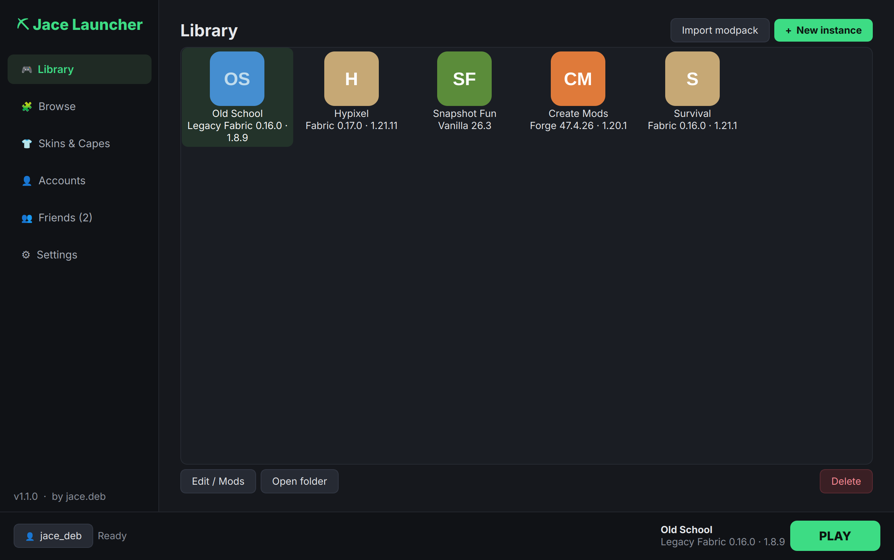
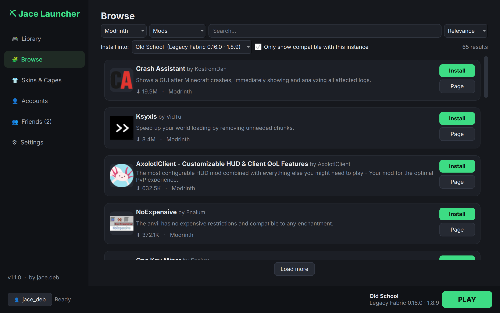
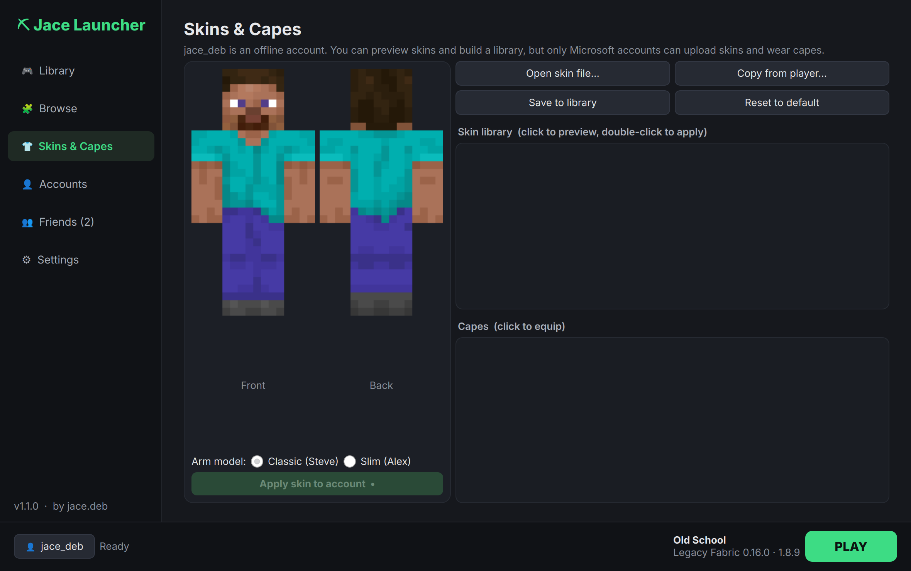
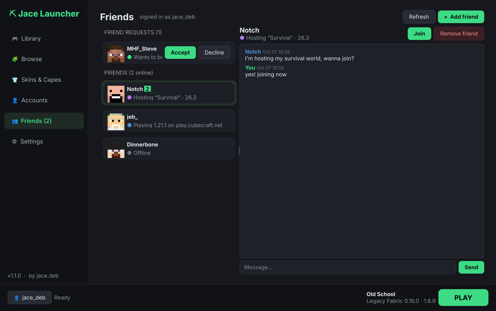

Every Minecraft.
Every mod loader.
A free launcher for Minecraft: Java Edition. It plays any version, installs mods and modpacks in a click, changes your skin and cape, and keeps your friends one click away.
Windows, macOS and Linux · free and open source

Everything in one launcher
No setup, and you don't need to install Java. Open it, sign in, play.
Every version
From the oldest alphas to the newest snapshots. The right Java is downloaded for each version automatically.
All the mod loaders
Fabric, Quilt, Forge, NeoForge and Legacy Fabric. Each instance keeps its own mods, worlds and settings.
Mods in a click
Browse Modrinth, CurseForge and Jace Store. Only compatible mods show up, and dependencies install themselves.
Updates
Check every mod for updates at once, even ones you added by hand. The launcher updates itself in one click too.
Skins & capes
Preview and upload skins, copy a friend's skin, switch capes, and keep a skin library.
Friends & chat
A friends list tied to your Minecraft account: see who's online, chat, and join their world. Jace Social →
Make it yours
Custom instance icons with a built-in icon builder, per-instance window sizes, and one-click desktop shortcuts.
Synced folders
Share resource packs, shaders and worlds between instances, or between computers with Dropbox or OneDrive.
Take a look
A fast, dark interface that stays out of your way.



Jace Friends, in game
The companion mod brings your friends list and chat into Minecraft.
- Press J, or click Friends on the title or pause screen
- Chat with friends and get notified of new messages
- Host your singleplayer world for friends, with no port forwarding (uses e4mc)
- Join a friend's world in one click
FabricQuiltNeoForgeForge1.20.1 – 26.3
Install it in a minute
Download, open it, and the setup wizard does the rest: accounts, install location and shortcuts.
Windows
Run the .exe. If SmartScreen appears, click More info → Run anyway, because the app isn't code-signed.
macOS 12+
Open the downloaded Jace Launcher.app. The first time, right-click it and choose Open.
Linux
Make the .AppImage executable and run it. It adds itself to your apps menu.